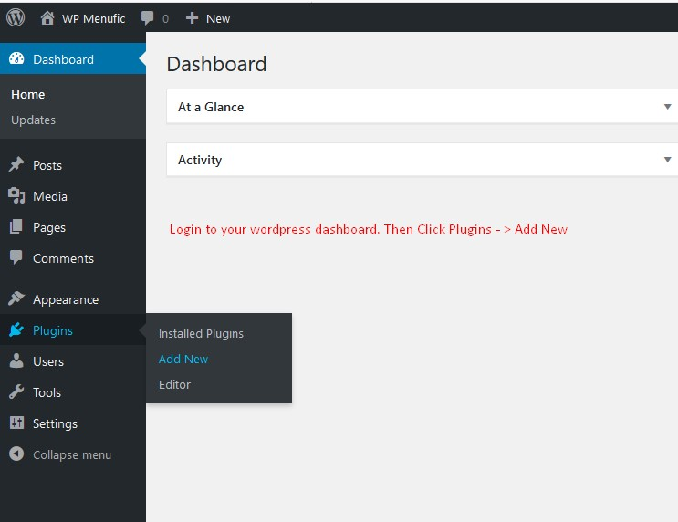
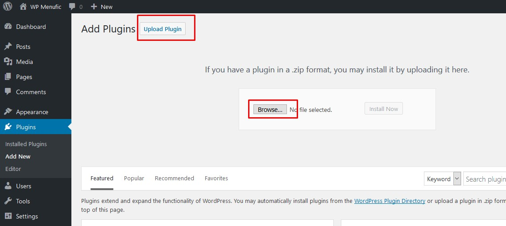
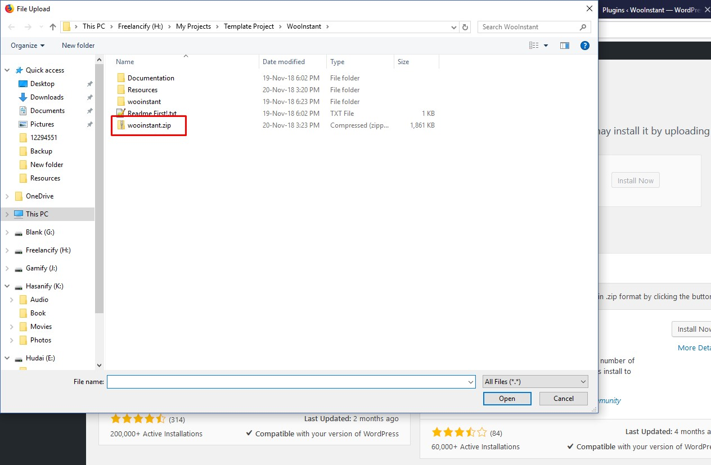
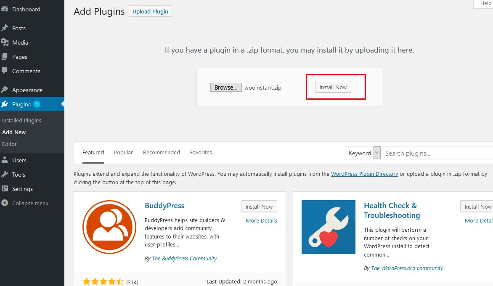
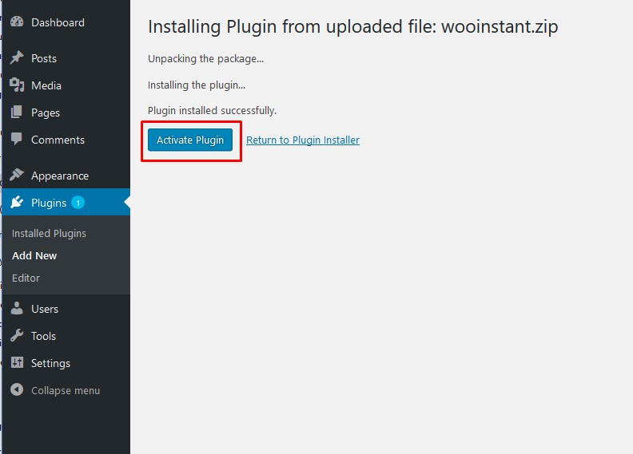
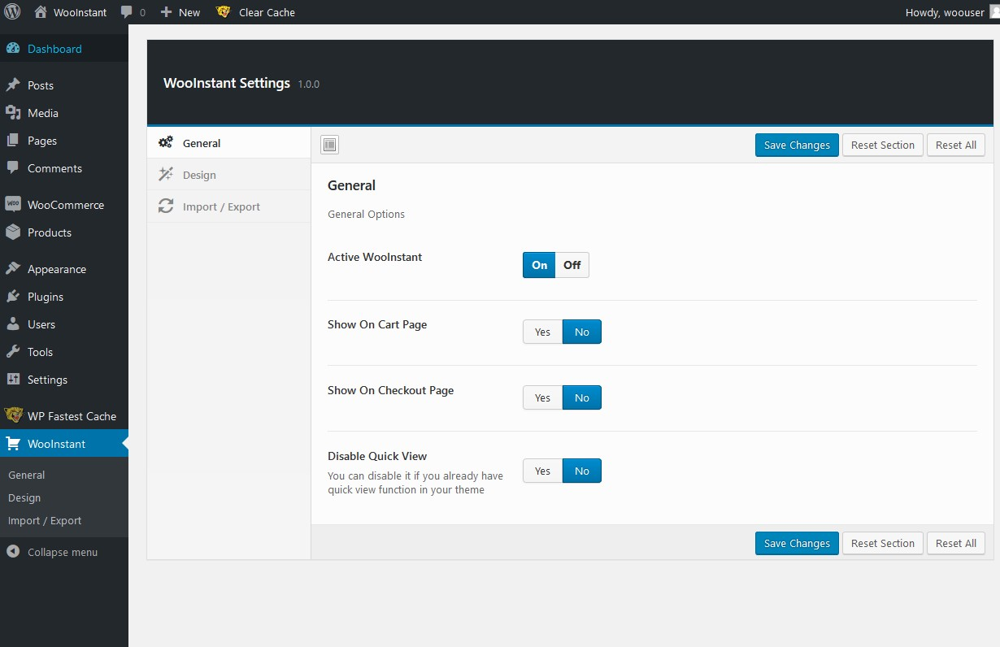

WooCommerce Instant / Onepage / Direct Checkout
Created: November 2018 | By: BootPeople | Email: bootpeople.online@gmail.com
Table of Contents
1. How to install and activate the plugin - back to top
Please follow the below steps to install and activate the plugin:
Step 01:
Step 02:
Step 03:
Step 04:
Step 05:
Step 06:

02. How to configure the plugin - back to top
To configure this plugin, click on the WooInstant Option on left side of your wordpress dashboard. You will see the below options:
All the options are self-explanatory. If you still have confusions in understanding any of the option, you can get in touch through our email (mentioned above).
03. Sources and Credits - back to top
These are the items we have used to develop this plugin:
- Option Panel: Redux Framework
04. Support - back to top
Thank you so much for purchasing this plugin. We'd be glad to help if you have any questions relating to this plugin.
If you need any kind of website development or web customization work, please contact our CEO from here.
© 2017-2018 BootPeople. All Rights Reserved.